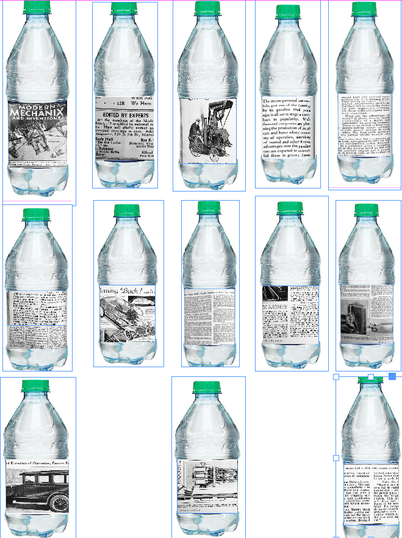
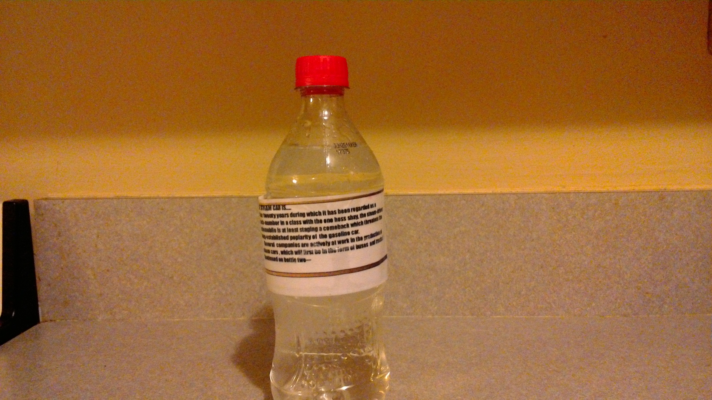
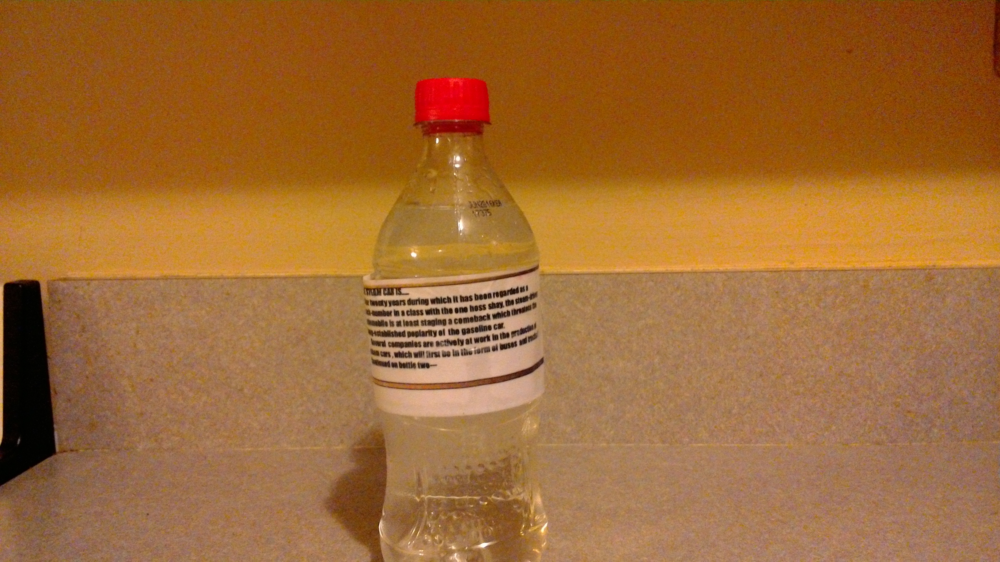
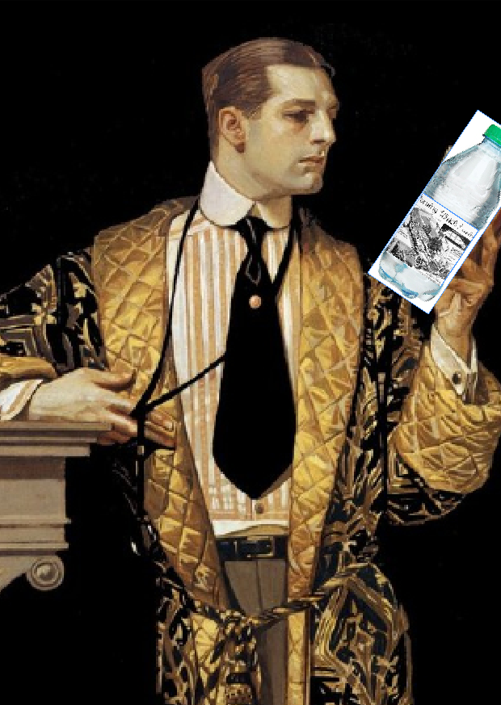
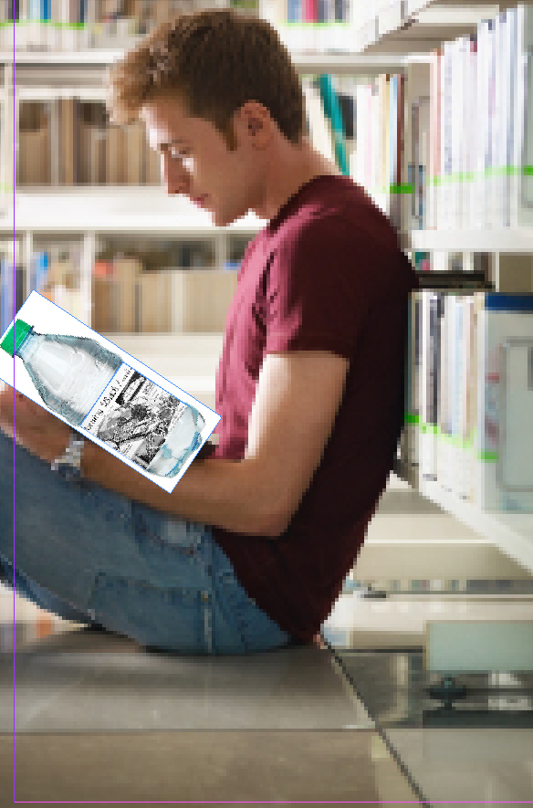

The reason for delivering the articles on water bottles is because the content revolves around inventions and building materials. As a the readers are mainly those in fields where they're using their hands, they can stay hydrated while also keeping up on their industries news.
Whose this product for?
This magazine and water bottle is for anyone who may want to take a break and stay informed while drinking water. Picture the auto mechanic whose been slaving away for hours on an engine and needs a couple minutes away from the hood. They can grab a "Modern Mechanix" quench their thirst and read some articles. With the articles sperad over a case of water, the reader can finish a few bottles a day and read the entire case through the work week.
One article would be printed through a case of 15 water bottles.
A new case featuring a new article will be in stores twice weekly for a total of 8 artcles a month--one full magazine, making this a weekly/monthly magazine.
The labels will be laminated so that the reader can remove them when done and keep to read in regular format if they choose.
There will also be a QR code on the side directing them to that portion of the article online.
There will be a subscription service on the website for the option of home delivery or work delivery.
The long term plan would be to open up a cafe where other products will be served in similar format except instead of buying a case they would be daily articles delivered on disposable cups.
With the subscription service old bottles would be retreieved on delivery to cut manufacturing costs and promote recycling.
ARTICLE FULL MOCK-UP
PROTOTYPES
 

USER EXPERIENCE EXAMPLES
 FINAL PROJECT-/ DESIGN FOR JOURNALISTS/ SPRING 2016/ PRF. DYLAN GREIF/ STUDENT JOSEPH REILLY/ SOURCE MATERIAL-MODERN MEHCANIX MAGAZINE